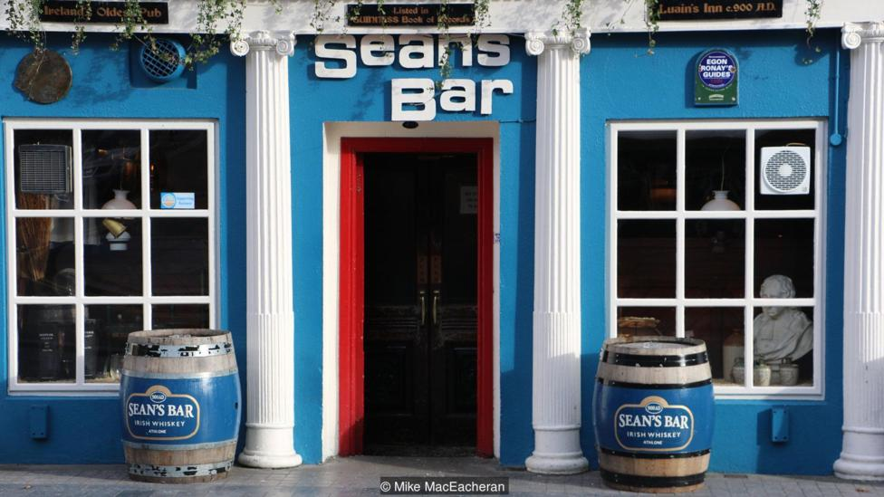
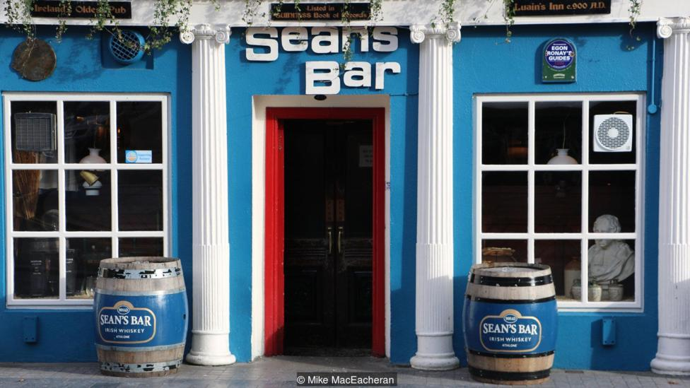

Куда пойти
"Hay tantos tipos de cerveza en el mundo que es casi imposible enumerarlos todos. No hay lugares menos interesantes donde probar esta bebida. Casi todas las ciudades tienen una cervecería, y algunas valen la pena solo con mirarlas."
"В мире существует столько сортов пива, что вряд ли можно все их перечислить. Интересных заведений, где можно попробовать этот напиток, — не меньше. Практически в каждом городе есть пивной бар, и некоторые из них стоят того, чтобы просто посмотреть на них."
"There are so many types of beer in the world that it is hardly possible to list them all. There are no less interesting places where you can try this drink. There is a beer bar in almost every city, and some of them are worth it just to look at them."
Бар Шона — самый старый паб в мире
На первый взгляд бар Шона, расположенный в ирландском городе Атлон на границе
графств Уэстмит и Роскоммон, ничем не выделяется среди подобных колоритных заведений. Заведение, которое
находится в исторической части города возле руин нормандского замка, признано старейшим пабом в Европе в 2004
году, но теперь его владельцы желают доказать, что бар Шона является старейшим баром в мире.
 

Artesian в Лондоне
Чернильные кляксы-бабочки на барной стойке напоминают пятна Роршаха. Есть
что-то психоделическое и в орнаменте ковра, и в чувственной сизо-фиолетовой обивке диванов. В форме изящных
шкафов и латунных люстр угадывается роскошь восточного гламура, а лакированные колонны – из неоклассицизма.
HR Giger Bar Museum в Грюйере
Бар и комната страха в одном месте. В пугающей красоте этого швейцарского бара
есть что-то притягательное, особенно для поклонников фильма «Чужой». Заведение открылось в 2003 году в
средневековом замке Сен-Жермен.

Мы рассказали про самый изветсные, а вообще в пивной культуре бары делятся на: сервис-бары, лаунж-бары, лобби-бары, диско-бары, пул-бары, пив-бары: